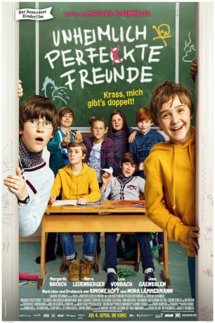

IMDB-Wertung: 8.1 / 10
IMDB-Wertung: 8.1 / 10  Metascore:
Metascore: 
 IMDB-Wertung: 8.1 / 10 Metascore:
Jahr: 2019
Dauer: 92 Minuten
FSK: 6
Land: Deutschland Studio: 20th Century FoxTonspuren:
Untertitel:
Auflösung: 1080p (1920x808) Größe: 6410 MB
Regisseur: Marcus H. Rosenmüller
Drehbuch: Simone Höft, Nora Lämmermann
Soundtrack: Andrej Melita
Darsteller:
 Margarita Broich als Frau Klawitter
Margarita Broich als Frau Klawitter Marie Leuenberger als Gesa
Marie Leuenberger als Gesa Butz Ulrich Buse als Spiegelkabinettbesitzer
Butz Ulrich Buse als Spiegelkabinettbesitzer Arnd Schimkat als Emils Vater
Arnd Schimkat als Emils VaterDatei: X:\2019(N-Z)\Unheimlich perfekte Freunde (2019, FSK6, 1920x808).mkv seit 30.09.2019
Festplatte: HD 2018(G-Z)-2019(A-Z)
 Es gibt insgesamt 62 Filme in der Gruppe '2019(N-Z)'
Es gibt insgesamt 62 Filme in der Gruppe '2019(N-Z)'